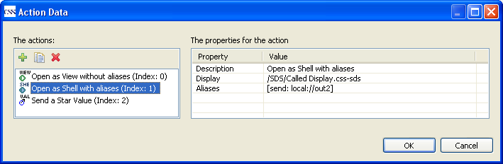
Opens a display in a new shell that is specified in the action
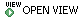 Opens a display in a new view that is specified in the action
 Writes a value to a process variable.
Writes a value to a process variable.
In SDS there are three kinds of action data that can be added to a widget.
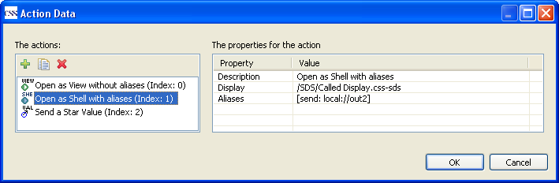
Opens a display in a new shell that is specified in the action
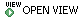
Opens a display in a new view that is specified in the action
Writes a value to a process variable.
The number of actions for a widget is not limited. In the execution mode of a display the cursor icon
 indicates that the underlying widget holds actions. By clicking the right mouse button all
actions of the widget pops up.
indicates that the underlying widget holds actions. By clicking the right mouse button all
actions of the widget pops up.
In the next section is an example of some actions. In the example
are only process variables used with the prefix 'local://' to be
independent from a control system. Because the following topics are related to actions we will explain them
also in the example displays:
Inheritance of Actions: An action that is defined in an upper
level is available for all widgets beneath the level.
Group Container: Define a subset of widgets as a group to
demonstrate inheritance of actions.
Alias: Aliases are important for actions to call new displays
with parameters.
The example consists of three display. Two of them are 'calling'
displays that invokes the 'called' display with different parameters.
The displays are integrated in the 'sample displays' of SDS. You can
install them via menu 'CSS' → 'Display' → 'Install Synoptic
Display Studio Sample Displays'.

Create a display with the name 'Calling Display 1'. Add the widgets
'Label', 'Polyline' and 'Ellipse' to the display. Set for the 'Label'
the property 'Value Type' to 'Text Value' that the widget is able to
handle strings and configure the dynamic attributes:

Select 'Polyline' and double click on the property 'Action Data' to add
new actions. Add Action 'Open View' and set the properties as follows:

The display configured in 'Display' will be opened as a view without
passing any arguments (property 'aliases' is empty).
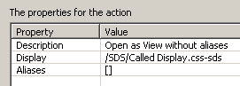
Add Action 'Open Shell' and set the properties as follows:

Add Action 'Send' and set the properties as follows:
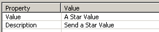
To send the value you have to configure an output channel for 'Action
Data' in the 'Dynamics Wizard',
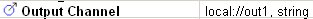
as described in section
SDS Dynamic Attributes.
Select 'Ellipse' and add Action 'Send' as follows:

Configure the same output channel for 'Action Data' like in 'Polyline':
Select 'Polyline' and 'Ellipse', click right button and select 'Create a
group'. To select the group you have to click on the free space between
the widgets that belongs to the group. In the property view of the group
you can see and edit all properties that have the widgets in common.
Now add an action for the group that you can also call from the widgets.
Select the group and add action 'Send':

and configure the following dynamisation:
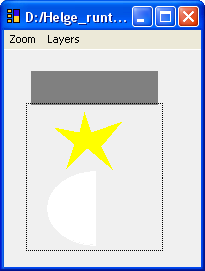
Create a display with the name 'Calling Display 2'. Add the widgets
'Label', 'Polyline' and 'Ellipse' to the display. Set for the 'Label'
the property 'Value Type' to 'Text Value' and configure the dynamic
attributes: 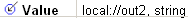
Set the parameter for Polyline and Ellipse like in the previous display:
Polyline View Action:
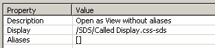
Polyline Shell Action:
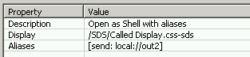
Polyline Send Action:
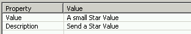
Set the dynamisation for 'Action Data' to

Ellipse Send Action:
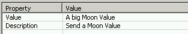
Set the dynamisation for 'Action Data' to
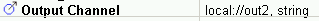
Group (Polyline and Ellipse) Send Action:

Set the dynamisation for 'Action Data' to

The 'Called Display' is opened by the other displays and the 'Label'
receives the data sent by the actions.
Set for the 'Label' an alias as shown in the follwing screenshot:
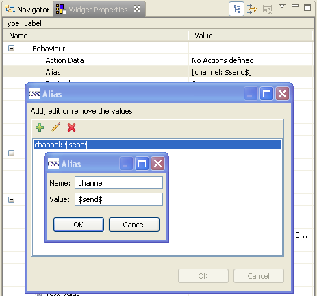
The dynamisation of the property 'Text Value' for the 'Label' is

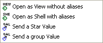
The simplest example for an action is to call a view or shell without any
parameters. Right click on file 'Calling Display1' → 'Run As Shell'. If you click now with the right
mouse button on a widget you see the available actions in a popup menu (see figure). The widgets inherits
one action from the group. Execute the action 'Open as view without aliases' by right click
on the polyline and select the action. The display 'Called display' will be opened as a view
in CSS.
To reuse the same display for different cases it can be called parametrized. Right click on
the polyline in the running shell 'Calling Display 1' and select the action 'Open as Shell
with aliases'.
Open 'Calling display 2': Right click on the file 'Calling display 2' →
'Run as Shell'. Right click on the polyline in the running shell 'Calling Display 2' and
select the action 'Open as Shell with aliases'.
The 'Called display' is executed in two
shells with different parameters. If you now select an action 'Send a value' from polyline,
ellipse or group you see the value in the label of the calling display. The label of the
called displays shows the value that is set in the called display because the called display
is parametrized with the appropriate channel. The action 'Call As Shell' sets via the
property 'alias' an alias name for the called display. The called display has to configure
the property 'alias' for the widgets to receive the paramter. To write the value of a 'Send
action' to a channel, you have to dynamise the property 'Action Data' like in the example.
The channel that is defined for the 'Output channel' is used from the 'Send action'.